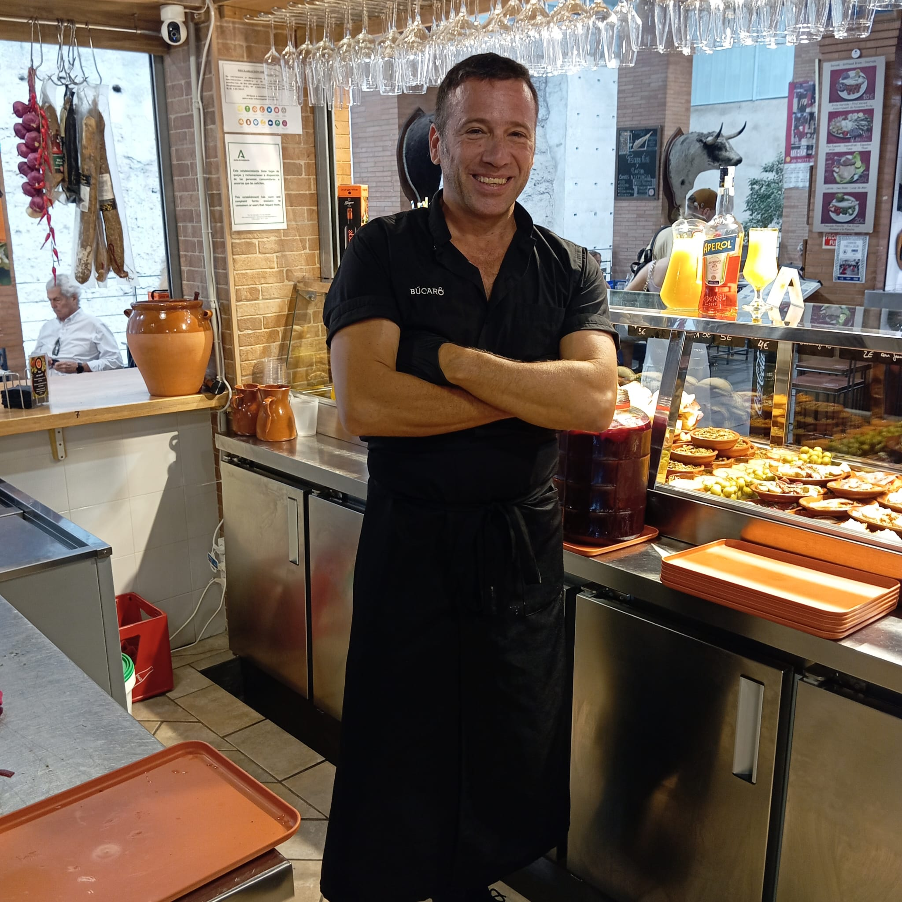
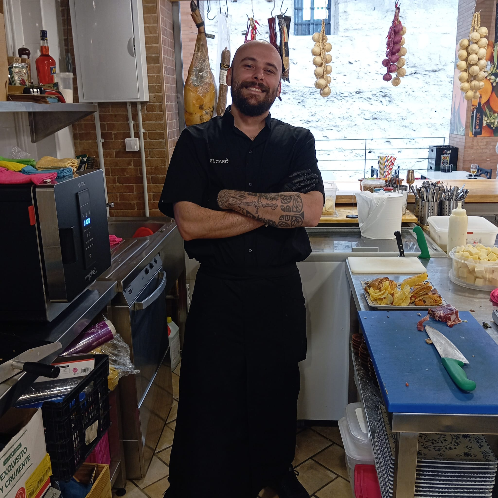
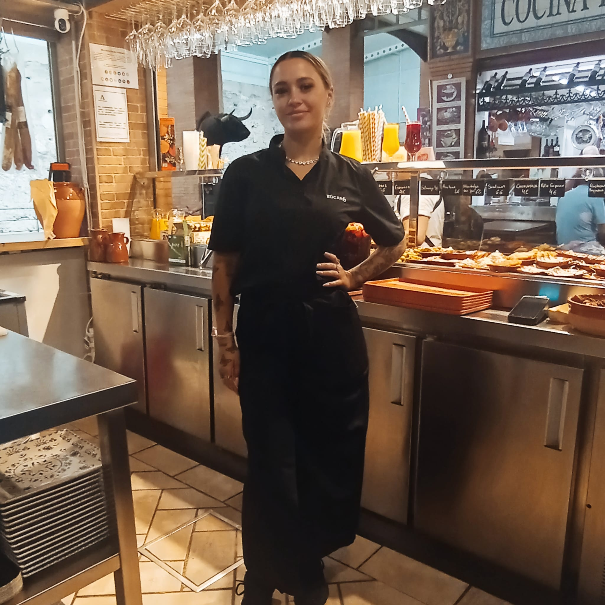

Nuestro equipo

Las personas detrás de BÚCARO
Cada miembro de nuestro equipo comparte la misma pasión por la gastronomía, la artesanía y la atención cercana que caracteriza a BÚCARO.

Manuel
Sonia

Curro
